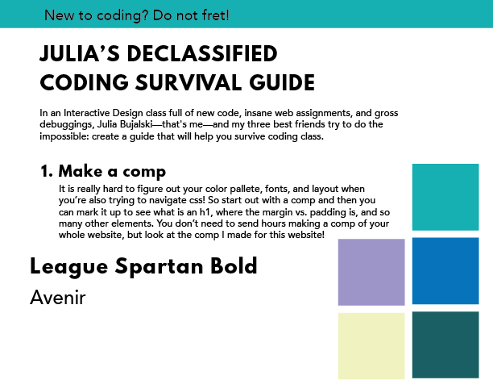

New to Coding? Do Not Fret!
Julia's Declassified Coding Survival Guide
In an Interactive Design class full of new code, insane web assignments, and gross debuggings, Julia Bujalski—that's me—and my three best friends try to do the impossible: create a guide that will help you survive coding class.
- Make a comp
It is really hard to figure out your color pallete, fonts, and layout when you’re also trying to navigate css! So start out with a comp and then you can mark it up to see what is an h1, where the margin vs. padding is, and so many other elements. You don’t need to send hours making a comp of your whole website, but look at the comp I made for this website!

- Lay out your HTML
If your h1s and h2s are layed out correctly or your section tags aren't closed, you won't be able to successfully style it. Also, if someone's browser doesn't have the correct functioning to support your css, you want to make sure that your website looks susccessful with your HTML alone. You want to be an escalator, not an elevator! When an escalator breaks, it becomes stairs. But when an elevator breaks, it is useless.
- Don't be afraid to be confused
Half of coding is debugging-most of the time you will know what the solution to your problem looks like but are unaware of the actual tag or line of code to fix it. And that's okay! That is when you can refer to your resources-MDN, your professor, or even just googling the issue. It is important to be comfortable with not knowing the next step or else coding can become a big nusiance.
- Fake it 'til you make it!
Especially in an introductory coding class, no one know what they're doing. But, it is important to not dwell on the small details and encourage yourself and others to move forward! Pretending you know what you're doing and helping others can actually help you become a better coder.
After a semester of learning code, I've been almost cried from a broken line of code but also screamed of joy at 2am when my website decided to work. That is the journey through leanring how to code and through learning how to do anything! Dive right in, don't forget to ask questions, don't be afraid to google, and always be passionate and enthusiastic. HAGS